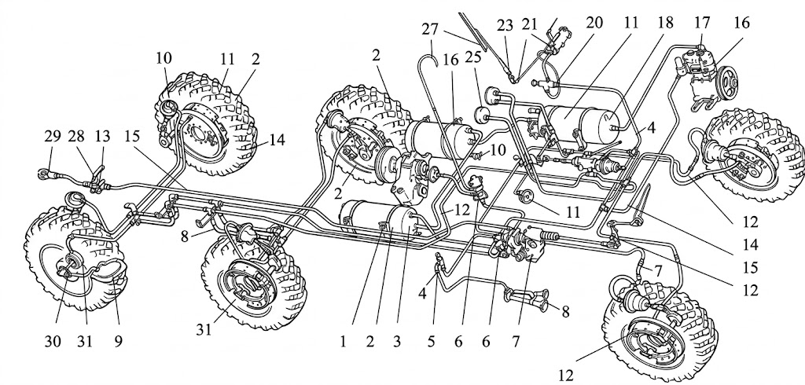
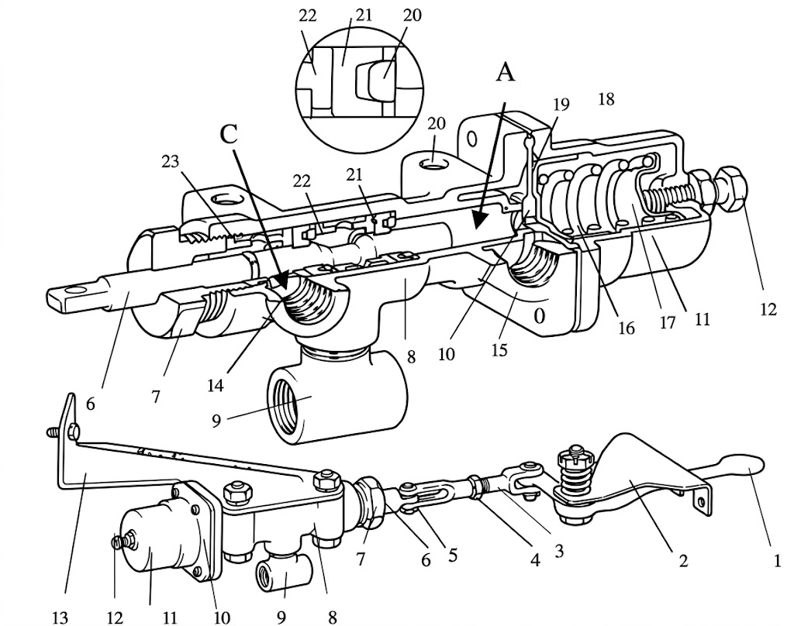
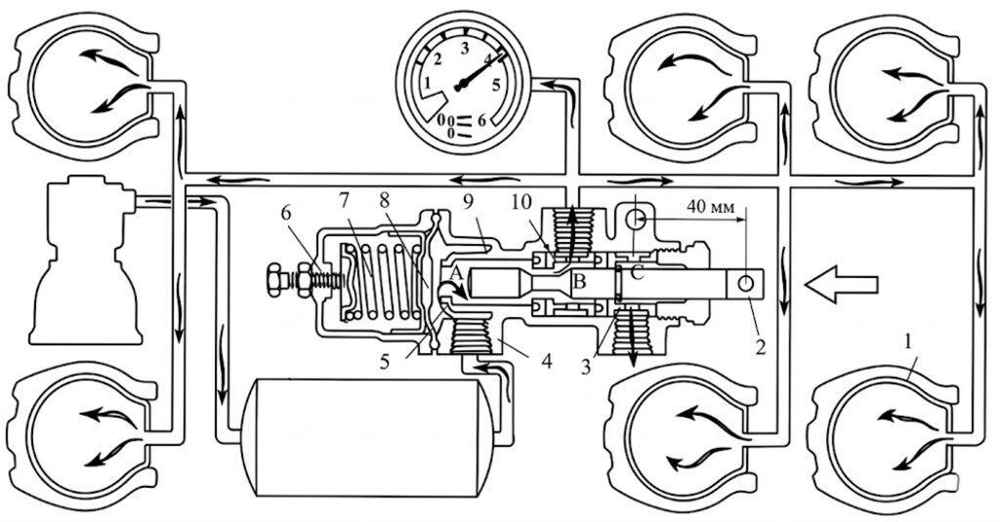
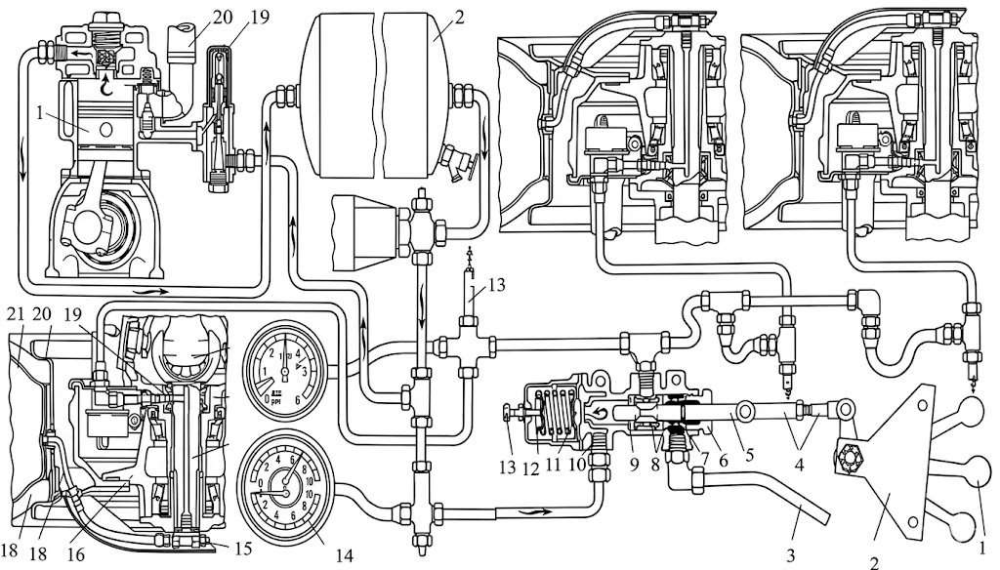
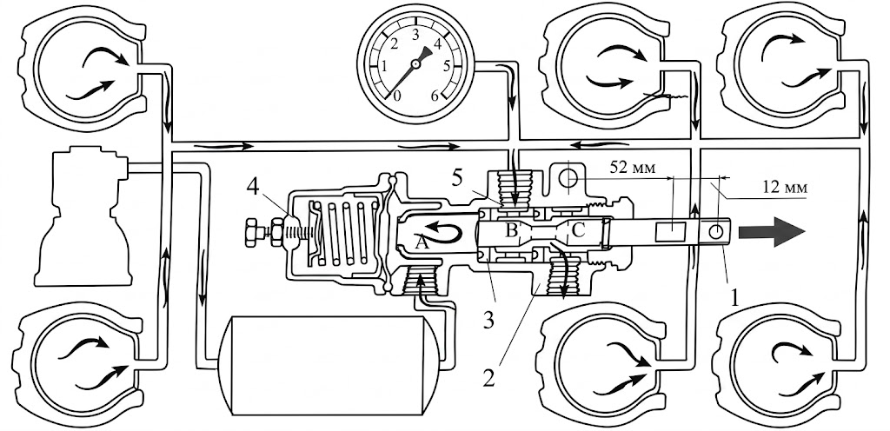
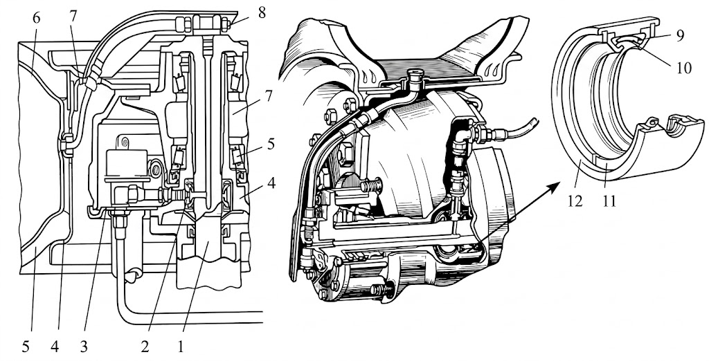
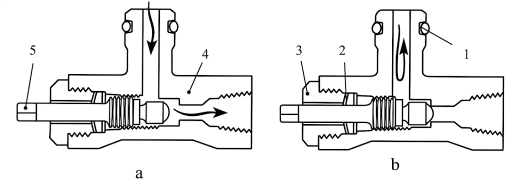

a. Công dụng
Hệ thống điều chỉnh áp suất hơi lốp được sử dụng nhằm thay đổi áp suất khí nén trong lốp ngay khi xe đang vận hành, phù hợp với trạng thái mặt đường mà xe đang chuyển động. Đây là trang bị đặc trưng trên xe quân sự, xe bọc thép và một số xe chuyên dụng cơ động trên đa địa hình.
b. Sơ đồ bố chí chung
Hệ thống điều chỉnh áp suất hơi lốp sử dụng nguồn khí nén từ máy nén khí trên xe. Trên xe trang bị phanh khí nén hoặc phanh thủy - khí (ZIL-131, Ural-375D, Ural-4320, KrAZ-255B…). Hệ thống mắc song song với dẫn động phanh và hoạt động độc lập với chế độ phanh.
Sơ đồ bố trí chung được thể hiện trên (Hình 12.28) gồm ba cụm chính:
- Cụm cung cấp và điều hòa khí nén (bao gồm máy nén khí, bộ điều chỉnh áp suất, van giảm áp, bình chứa, đồng hồ và van an toàn) thường tích hợp với hệ thống phanh;
- Cụm điều khiển và phân phối (van một chiều, van điều khiển, khối khóa lốp trung tâm, đồng hồ kiểm tra áp suất lốp) dùng để lựa chọn chế độ bơm, giữ hay xả;
- Cụm dẫn khí. làm kín (bao gồm các chi tiết làm kín, van khóa bánh xe, ống mềm và ống dẫn khí) bảo đảm truyền khí nén tới bánh xe trong điều kiện làm việc thực tế.
Trong sử dụng, hệ thống cho phép điều chỉnh áp suất ngay trong cabin, song đòi hỏi bảo dưỡng định kỳ, nhất là các cụm làm kín và ống dẫn khí, đồng thời luôn có cơ chế ưu tiên cho hệ thống phanh để bảo đảm an toàn.

Hình 12.28. Sơ đồ bố trí hệ thống điều chỉnh áp suất hơi lốp trên xe Zil.131
1. Phanh tay; 2. Bình chứa khí nén; 3. Hộp số phân phối; 4. Đường dẫn khí nén tới còi hơi; 5. Van khí nén điện từ điểu khiển hộp số phân phối; 6. Khóa điều khiển bằng tay; 7. Tổng van phanh; 8. Còi hơi; 9. Lốp xe; 10. bầu phanh; 11. Má phanh; 12. Công tắc đèn phanh; 13. Bàn đạp phanh; 14. Van hạn chế áp suất; 15. Đường dẫn khí nén tới van giữ hơi; 16. Máy nén khí; 17. Van điều hòa áp suất; 18. Thân van điều khiển; 19. Van khóa khí nén; 20. Van xả khí nén; 21. Đường dẫn khí nén tới gạt mưa; 22. Van điều khiển gạt mưa; 23. Đồng hồ đo áp suất hệ thống phanh; 24. Gạt mưa; 25. Đồng hồ đo áp suất hệ thống bơm lốp; 26. Buồng khí nén điều khiển hộp số phân phối; 27. Ống thoát khí nén; 28. Van điều khiển khí nén tới rơ mooc; 29. Đầu nối khí nén tới rơ mooc; 30. Van giữ hơi; 31. Buồng chứa hơi; 32. Vành bánh xe.
c. Cấu tạo và nguyên lý làm việc các bộ phận
* Van điều khiển
- Đặc điểm cấu tạo:
Van điều khiển kiểu con trượt được lắp trong cùng cụm với van hạn chế giảm áp (Hình 12.29). Bên trong thân van, các vòng bít cao su chia không gian thành ba khoang: khoang bên trái nối với bình chứa khí nén (15), khoang giữa nối với các lốp xe (9), và khoang bên phải thông với khí trời (14).
Trục điều khiển (6) có đoạn tiện nhỏ ở giữa, có thể dịch chuyển dọc trục theo hai chiều. Hành trình trục điều khiển được giới hạn bởi vòng khóa (23), trong khi độ kín khít được bảo đảm nhờ các vòng phớt (21), ống chặn (22) và đệm chặn.
Van hạn chế giảm áp được bố trí chung với van điều khiển, có nhiệm vụ ngắt hệ thống điều chỉnh áp suất lốp khi áp suất trong bình chứa giảm xuống dưới 0,55 MPa (tương đương 0,53 N/mm²). Nhờ đó, khí nén dự trữ luôn được ưu tiên cho hệ thống phanh, bảo đảm an toàn khi xe hoạt động.

Hình 12.29. Van điều khiển cùng với van hạn chế áp suất khí nén
1. Cần điều khiển; 2,13. Giá đỡ; 3,5. Đầu liên kết với trục điều khiển; 6. Trục điều khiển; 4. Đai ốc; 7. Nắp dẫn hướng; 8,19. Thân van điều khiển; 9. Đường dẫn khí nén ra bánh xe và đồng hồ áp suất; 10. Màng cao su;11. Nắp van hạn chế áp suất; 12. Bu lông điều chỉnh; 14. Đường dẫn khí nén từ van điều khiển ra khí quyển; 15. Đường dẫn khí nén từ bình chứa tới van hạn chế áp suất; 16. Lo xo hạn chế; 17. Đế chặn lò xo; 18. Cốc dẫn hướng lò xo; 20. Vòng ép kín phớt; 21. Phớt chặn khí nén; 22. Ống chặn; 23. Vòng khóa.
Nắp van hạn chế (11) được ghép với mặt bích van điều khiển qua màng (10). Khi áp suất trong bình chứa nhỏ hơn giá trị 0,53 MPa, lực khí nén tác dụng lên màng (10) không thắng được sức căng của lò xo (16), khiến màng ép chặt và đóng kín đường dẫn khí từ bình chứa tới van điều khiển. Khi áp suất đạt từ 0,53 N/mm² trở lên, màng (10) bị đẩy mở, cho phép khí nén đi vào hệ thống điều chỉnh áp suất lốp. Giá trị áp suất giới hạn có thể thay đổi bằng cách điều chỉnh sức căng lò xo (16) thông qua bu lông (12).
- Nguyên lý làm việc:

Hình 12.30. Chế độ bơm khí nén vào lốp
1. Lốp xe; 2. Trục điều khiển; 3. Vòng chặn; 4. Đường dẫn khí nén từ bình chứa tới van hạn chế áp suất; 5. Thân van điều khiển; 6. Đầu van cấp khí nén; 7. Lò xo; 8. Màng cao su; 9. Thân van hạn chế áp suất khí nén; 10. Đường dẫn khí nén ra bánh xe và đồng hồ áp suất.
Van điều khiển làm việc theo ba chế độ: bơm khí vào lốp, xả khí ra ngoài và giữ áp suất trong lốp.

Hình 12.31. Chế độ giữ áp suất trong lốp
1. Cần điều khiển; 2. Giá đỡ; 3. Đường dẫn khí nén từ van điều khiển ra khí quyển; 4. Đầu liên kết trục điều khiển; 5. Trục điều khiển; 6. Nắp dẫn hướng; 7. Vòng chặn; 8. Ống chặn; 9. Phớt chặn khí nén; 10. Đường dẫn khí nén từ bình chứa tới van hạn chế áp suất; 11. Màng cao su; 12. Nắp van hạn chế áp suất; 13. Bu lông điều chỉnh; 14. Đồng hồ đo áp suất; 15. Van giữ hơi; 16. Đầu trục bánh xe; 17. Ống dẫn hơi vào lốp; 18. Lốp xe; 19. Buồng chứa hơi; 20. Vành bánh xe; 21. Săm xe.
Chế độ bơm khí vào lốp (Hình 12.30): Khi đưa cần điều khiển về vị trí “bơm”, trục điều khiển (2) dịch chuyển sang trái. Khi đó khoang bên trái và khoang giữa của van thông nhau, đồng thời khoang giữa bị ngăn cách với khí trời. Nếu áp suất trong bình chứa lớn hơn 0,53 MN/m², màng (8) bị đẩy mở, cho phép khí nén đi từ bình chứa tới buồng A, sau đó tới buồng B và theo đường (10) vào lốp xe. Khi áp suất trong bình chứa nhỏ hơn giá trị này, màng (8) đóng, ngăn không cho khí nén cấp đến hệ thống điều chỉnh lốp, khí nén được ưu tiên dự trữ cho hệ thống phanh xe.
Chế độ giữ áp suất trong lốp (Hình 12.31): Khi đưa cần điều khiển về vị trí trung gian, các khoang A, B, C bị ngăn cách với nhau. Áp suất khí nén trong lốp được giữ ổn định, không thay đổi. Chỉ khi áp suất bình chứa lớn hơn 0,53 MN/m² thì khoang A mới thông với hệ thống, còn nếu thấp hơn thì van tự động đóng, bảo đảm ưu tiên cho hệ thống phanh xe.
Chế độ xả khí ra ngoài (Hình 12.32): Khi đưa cần điều khiển về vị trí “xả”, trục điều khiển (1) dịch chuyển sang phải. Khi đó khoang giữa B nối thông với khí trời C, còn khoang trái A bị ngăn cách. Khí nén trong lốp theo đường (5) tới buồng B, sau đó tới buồng C và thoát ra ngoài qua đường (2), làm giảm áp suất lốp. Nếu áp suất bình chứa nhỏ hơn 0,53 MN/m², van vẫn duy trì đóng với khoang A để không ảnh hưởng đến nguồn khí dành cho quá trình phanh.

Hình 12.32. Chế độ xả khí nén từ lốp ra ngoài
1. Trục điều khiển; 2. Đường dẫn khí nén từ van điều khiển ra khí quyển; 3. Phớt chặn khí nén; 4. Thân van hạn chế áp suất khí nén; 5. Đường dẫn khí nén ra bánh xe và đồng hồ áp suất.
Người lái có thể kiểm tra áp suất trong lốp qua đồng hồ báo áp suất. Khi cần điều chỉnh áp suất, đưa cần điều khiển về vị trí trung gian, đóng các van giữ hơi tại các bánh xe, siết hoặc nới đai ốc điều chỉnh trên van hạn chế áp suất để duy trì áp suất ổn định trong lốp. Khi cần thay đổi áp suất hơi lốp trong quá trình chuyển động của ô tô, các van giữ hơi phải được mở trước khi xe chuyển động.
* Bộ phận dẫn khí nén tới bánh xe
- Đặc điểm cấu tạo:
Bộ phận dẫn khí nén tới bánh xe có nhiệm vụ dẫn khí nén từ phần không quay (trục, dầm cầu) sang phần quay (bánh xe) để đảm bảo lốp luôn được cấp khí khi xe chuyển động. Đây là chi tiết quan trọng vì vừa phải bảo đảm độ kín khí, vừa chịu được điều kiện quay liên tục của bánh xe.
Cấu tạo của bộ phận dẫn khí nén tới bánh xe được minh họa ở (Hình 12.33), gồm các chi tiết chính sau:

Hình 12.33. Bộ phận dẫn khí nén vào bánh xe
1. Bán trục; 2. Đường ống hơi; 3. Giá đỡ; 4. Vành bánh xe; 5. Lốp xe; 6. Săm xe; 7. Đường dẫn hơi từ van giữ hơi vào bánh xe; 8. Van giữ hơi; 9. Phớt làm kín khí nén; 10. Lò xo ép chặt phớt; 11. Vòng hãm; 12. Buồng hơi.
Bên trong bán trục (1) được khoan lỗ dọc trục và lỗ hướng kính, nối thông với đường ống (2) dẫn khí đến buồng chứa hơi (12). Đầu ngoài bán trục được lắp chặt với mặt bích trên, có gắn van giữ hơi (8) và đầu nối để dẫn khí nén ra ống (7), đưa khí nén tới săm lốp.
Buồng chứa hơi (12) có dạng Hình trụ, lắp cố định trên dầm cầu, liên kết bằng mối ghép ren. Buồng chứa hơi có lỗ hướng kính nối với đầu ống dẫn khí từ van điều khiển. Hai đầu buồng chứa được làm kín bằng các phớt cao su, cố định bằng vòng giữ, đảm bảo không rò rỉ khí ra ngoài. Không gian bên trong buồng chứa và hai phớt tạo thành một khoang kín, cho phép dẫn khí từ trục (không quay) sang bánh xe (quay) một cách liên tục và không bị rò rỉ.
- Nguyên lý làm việc:
Khi hệ thống cấp khí hoạt động, khí nén từ bình chứa đi qua van điều khiển và theo đường ống (25) vào buồng chứa hơi (12). Tại đây, nhờ sự làm kín của các phớt cao su, khí được dẫn qua van giữ hơi và đường ống (7) đến săm lốp. Nhờ kết cấu này, dù bánh xe quay liên tục, khí nén vẫn được truyền từ phần không quay sang phần quay mà không bị rò rỉ.
* Van giữ hơi
- Đặc điểm cấu tạo:
Van giữ hơi (Hình 12.34) được lắp đặt trên đường dẫn khí nén tới bánh xe, có nhiệm vụ ngăn không cho khí nén thoát ra ngoài khi đường ống hoặc phớt làm kín bị hở. Nhờ đó, áp suất khí trong lốp vẫn được duy trì ổn định, bảo đảm xe tiếp tục cơ động trong tình huống xảy ra hỏng hóc cục bộ trên hệ thống dẫn khí.

Hình 12.34. Van giữ hơi
1. Vòng làm kín; 2. Đệm làm kín; 3. Đai ốc; 4. Thân van; 5. Trục van
a. Trạng thái khi xả khí nén; b. Trạng thái khi giữ khí nén
Van giữ hơi gồm các bộ phận chính: Trục van (5) với dạng Hình trụ, một đầu chế tạo chỏm cầu để bít kín cửa dẫn khí khi van đóng. Đai ốc (3) được lắp với thân van bằng mối ghép ren, vừa có nhiệm vụ cố định trục van, vừa cho phép tháo lắp bảo dưỡng. Đệm làm kín (2) bố trí giữa trục van và thân van, đảm bảo độ kín khít khi van làm việc. Vòng làm kín (1) đặt ở đầu nối đường khí, ngăn rò rỉ khi khí nén đi qua. Thân van (4) có dạng khối, bên trong gia công lỗ dẫn khí và lỗ lắp trục van.
- Nguyên lý làm việc:
Khi hệ thống hoạt động bình thường, van giữ hơi ở trạng thái mở (Hình 12.26a), khí nén từ đường ống đi qua thân van tới bánh xe. Lúc này trục van (5) được giữ ở trạng thái mở, không cản trở dòng khí nén.
Khi cần điều chỉnh áp suất khí nén trong hệ thống hoặc ngắt dòng khí nén vào lốp xe (Hình 12.26b), sử dụng dụng cụ siết chặt trục van (5). Đầu chỏm cầu của trục van ép sát vào bệ chặn trong thân van, đóng kín cửa van, ngăn không cho khí trong lốp thoát ra ngoài.